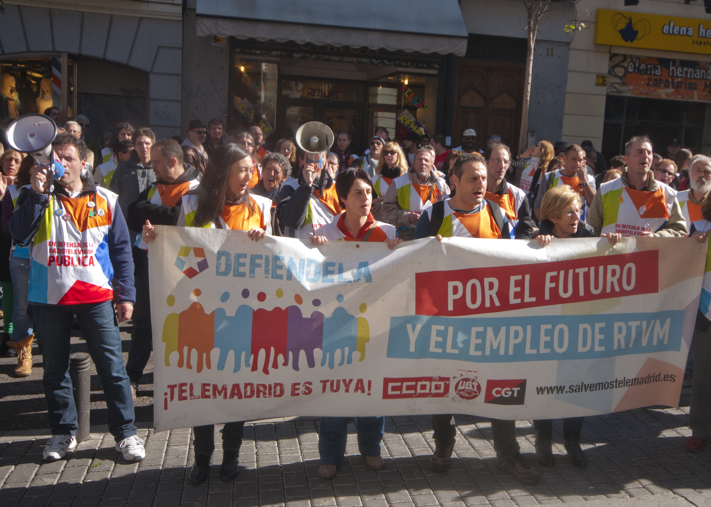

Men and women experience similar rates of anxiety due to job insecurity
Despite gender disparities in the workforce, male and female workers in Europe report similar rates of anxiety in response to job insecurity across countries.Economic stress and anxiety can contribute to poor mental health outcomes as more people work non-traditional jobs with little stability, and according to Dr. Egidio Riva, a co-author of the study investigating these trends, such effects need to be taken seriously by both governments and employers alike.
As more people work temporary gigs with little protection, or fear layoffs in an unstable economy, job insecurity is on the rise.These stresses understandably contribute to poor mental health and feelings of anxiety.But given gender disparities in the workforce – women are more likely to work temporary jobs and receive lower pay – researchers were curious whether job insecurity affected men and women differently.
A study published in
Frontiers in Sociology analyzed data from the European Working Conditions Survey, looking at results from 2005, 2010, and 2015.The survey asked people to what extent they thought they might lose their job in the next six months and whether they had experienced anxiety over the last 12 months.The study found that, in Europe, men and women actually reacted to job insecurity fairly similarly.Female workers reported similar rates of anxiety due to an insecure job to their male counterparts.According to Dr. Egidio Riva, a co-author of the study and researcher at the University of Milano-Bicocca in Italy, this may be due to trends towards gender egalitarianism in Europe.
But while women and men might be affected at similar rates, Riva says that job insecurity is very much still a real concern.'Public health consequences of job insecurity need to be seriously considered, given that recent changes and reforms in European labor markets, as well as the current COVID-19 crisis, are likely to result in a higher prevalence of workers, both males and females, feeling threatened by involuntary job loss,' he said.
Perceived job insecurity and anxiety.A multilevel analysis on male and female workers in European countries ► Read original article ► Download original article (pdf)
In order to analyze whether the threat of job insecurity was more pronounced in certain European countries due to socioeconomic, cultural, or political variables, Riva and his co-author, Dr. Anna Bracci of the University of Applied Sciences and Arts of Southern Switzerland, used multilevel modeling analyses.They found few cross-national differences in their results, meaning the relationship between job insecurity and anxiety did not vary between countries.The study was limited by the fact that all data was self-reported and taken at a single time point, so cause-and-effect cannot be determined.
Riva says that the findings 'have practical implications for both policymakers and employers' and suggests that 'generous and more effective active labor market programs are needed' in order to address perceived job insecurity and its associated mental health challenges.
REPUBLISHING GUIDELINES: Open access and sharing research is part of Frontiers’ mission.Unless otherwise noted, you can republish articles posted in the Frontiers news blog — as long as you include a link back to the original research.Selling the articles is not allowed.
aperture':'0','credit':'','camera':'','caption':'','created_timestamp':'0','copyright':'','focal_length':'0','iso':'0','shutter_speed':'0','title':'','orientation':'0'}' data-image-title='shutterstock_128424911-1' data-large-file='https://frontiersinblog.files.wordpress.com/2020/09/shutterstock_128424911-1.jpg?w=940' data-medium-file='https://frontiersinblog.files.wordpress.com/2020/09/shutterstock_128424911-1.jpg?w=300' data-orig-file='https://frontiersinblog.files.wordpress.com/2020/09/shutterstock_128424911-1.jpg' data-orig-size='3140,2243' data-permalink='https://blog.frontiersin.org/shutterstock_128424911-1/' sizes='(max-width: 1024px) 100vw, 1024px' src='https://frontiersinblog.files.wordpress.com/2020/09/shutterstock_128424911-1.jpg?w=2048' srcset='https://frontiersinblog.files.wordpress.com/2020/09/shutterstock_128424911-1.jpg?w=1024 1024w, https://frontiersinblog.files.wordpress.com/2020/09/shutterstock_128424911-1.jpg?w=2048 2048w, https://frontiersinblog.files.wordpress.com/2020/09/shutterstock_128424911-1.jpg?w=150 150w, https://frontiersinblog.files.wordpress.com/2020/09/shutterstock_128424911-1.jpg?w=300 300w, https://frontiersinblog.files.wordpress.com/2020/09/shutterstock_128424911-1.jpg?w=768 768w'>
Posted On: 2020-09-17T00:00:00
Posted By: Nora Belblidia

Content Date: 2020-09-17
Download Date: 2021-07-10
Document ID: L0C04F43X